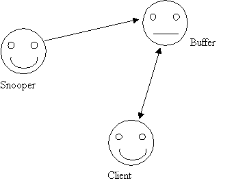
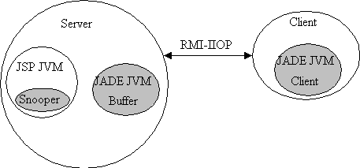

Last modified:
Java platform: Sun JDK 1.3 and over
JSP platform: Sun Java Server Web Development Kit (JSWDK) 1.0.1 , Jakarta Tomcat 3.X/4.0
JADE
versions 1.4 and over.
One of the major interest when adopting the Java Server Pages approach to generate dynamic HTML, is to be able to use available Java APIs to handle various work such as database connection, authentication, etc... One interesting feature of JSP is also the convenient way to handle forms with JavaBeans.
Since JADE is written in Java, it is pretty
easy to integrate JADE agents with JSP. This allows you to have for instance
an agent looking at all the connections made to a particularly sensitive
web page, and report you each of them (this is particularly interesting
in the Java Server Pages context for the error page for instance). This
will be the application we are going to design in this tutorial.
This tutorial assumes that:
you are familiar with JADE and have JADE correctly installed.
you are familiar with JSP and have a JSP enabled web server correctly installed.
you have downloaded the JADE tag library add-on from the JADE web site and you have executed the scripts 'ant lib' and 'ant examples' that create the appropriate jar files.

Drawing 1 JADE agents
To be able to know if the client is alive or not, I need to wait for a reply from the client during 10 seconds. If no confirmation arrive, I suppose that the agent is not there and I do not clear the message in the buffer agent.
To be able to use JADE agent, we need at
least one agent container on the JVM running the servlet. So we need to
integrate the call to JADE platform or container, usually done from the
command line, directly in the JSP page. Here I simulate a command line
call with no option for JADE 1.4, with the "-container" for JADE 2.0, which
means that the JADE platform is running on the same machine than the JSP
web server. A JADE Agent Platform cannot be created within a JSP page because
of security restrictions. In the next releases of JADE this limitation
will probably be removed.
Once the JADE container is created, we need to register our Snooper agent to the container. This is done using the doStart() method. Note that the reference to our agent is the ID defined in the useBean declaration.
The main problem with that approach is that:
The user need to manipulate directly the agent in the code.
What is needed:
The jspagents.jar file: it contains the Snooper, Buffer and Client classes (actually, you just need the Snooper agent here).
The jade.tld file: it maps each tag to a class.
The web.xml file: this files maps the jade taglib id « jade » to the jade.tld file.
$tomcat/webapps/myapp all the jsp files (jestjade.jsp, testagade.jsp, testagade1.jsp) $tomcat/webapps/myapp/WEB-INF web.xml, jade.tld $tomcat/webapps/myapp/WEB-INF/lib all jade jar files (jade.jar, jadeTools.jar, etc.) + the jadetaglib.jar file + jspagents.jar
Note that is it necessary to put all the jar files in the same lib directory. For instance, if one want to share jade classes between several JSP applications, then putting jade jar files in the main lib directory ($tomcat/lib) is possible if you also move the jadetaglib.jar and jspagents.jar files there.
To declare the jade taglib in a jsp page, one must put this line at the very begining of the file:
<%@ taglib uri="jade.wrapper.taglib" prefix="jade" %>
Then it is possible to use the three tags container, useAgent and sendObject:
container:
The container tag creates a JADE container with an application scope. The options available are the ones available from jade command line: hostname, port and a string parameter for future extensions. Note that for the moment one can only creates new containers for an existing JADE platform, due to security restrictions.
<jade:container id="mycontainer" host="myhost" port="1099"/>useAgent:
The useAgent tag creates a new agent in a given container for a given scope. The agent id is the name of the agent in the container, and the name of the proxy agent in the jsp page.
<jade:useAgent id="snooper" classname="examples.jsp.Snooper" container="mycontainer" scope="application"/>sendObject:
The last tag should replace the agent.putO2AObject() method. Unfortunately, for the moment, only String objects can be sent to the agent.
The following code:
<% snooper.putO2AObject(request.getRemoteHost()+" "+(new java.util.Date())+" "+request.getRequestURI(),false); %>is equivalent to:
<jade:sendObject id="snooper" blocking="false"><%= request.getRemoteHost()+" "+(new java.util.Date())+" "+request.getRequestURI() %></jade:sendObject>If one to to pass an object an not a String to an object, he should use the first approach.
The following jsp files creates one container and two agents, using those tags:

Drawing 2 JADE containers
The client is running another instance of the JVM to run a second JADE container.
The interesting feature of this design is
that the platform (and the buffer agent) is dissociated from the JSP page.
Since each time that you change the JSP page you delete the snooper agent
and his container, using a separate container for the buffer avoid to loose
all the information it contains.
To run this example, compile the three agent
java files. Put Snooper.class
and Buffer.class
in the server in a directory of the classpath of your JSP web server (the
classes
directory with tomcat, the webpages/WEB-INF/jsp/beans/
with JSWDK for instance). Do not forget to add JADE jar files in the
lib
directory of the JSP web server. (they will be added automatically on the
JSP web server classpath). Put Client.class
on the client computer. (I assume that JADE is installed on this computers).
Remember that if you use the package examples.jsp,
you have to put the class files in a subdirectory examples/jsp/.
Put the file testjade.jsp
in a directory accessible from your JSP web server (webpages/
for instance).
1. Run JADE platform with buffer agent on
the server
java jade.Boot -platform buffer:examples.jsp.Buffer
2. Run the JSP page with the snooper agent
on the server
request the testjade.jsp from your JSP web
server
3. Run the client agent into a jade container
on the client
java jade.Boot -container -host server.domain daniel:examples.jsp.Client